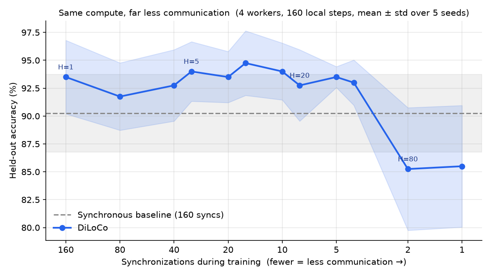
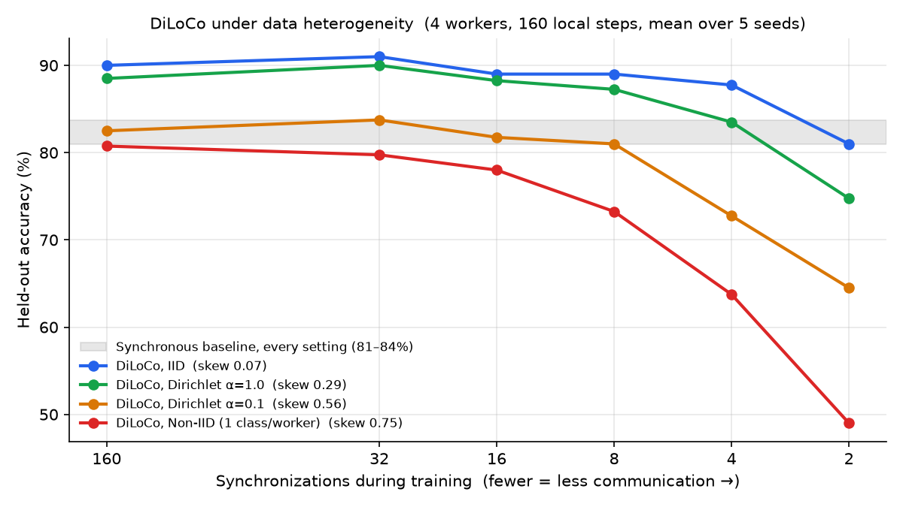
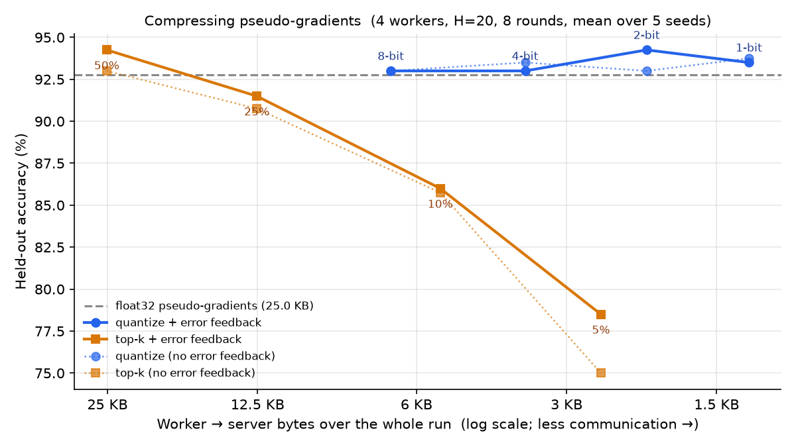
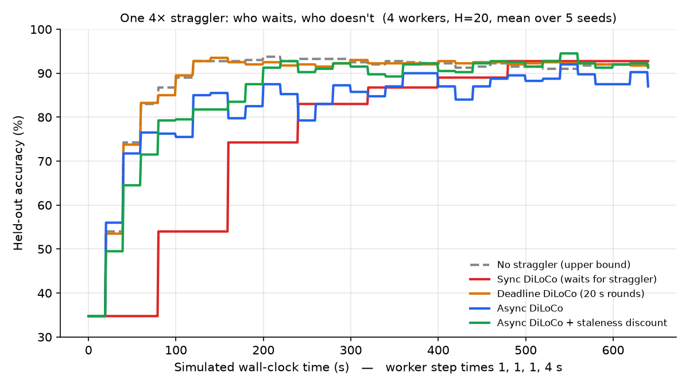
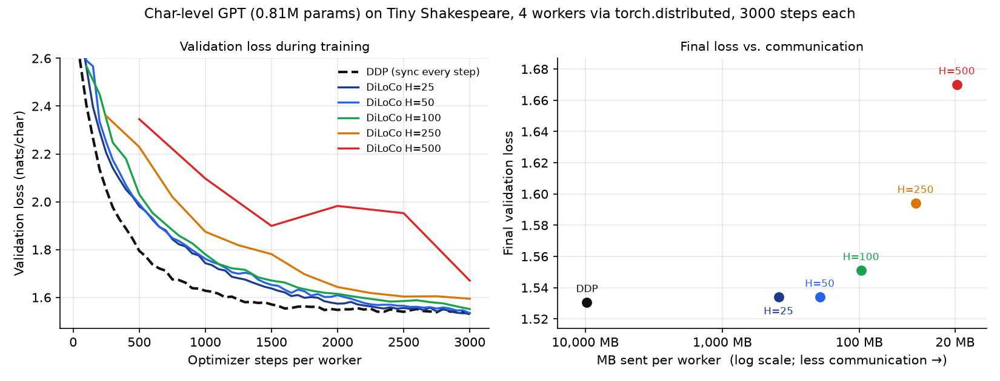
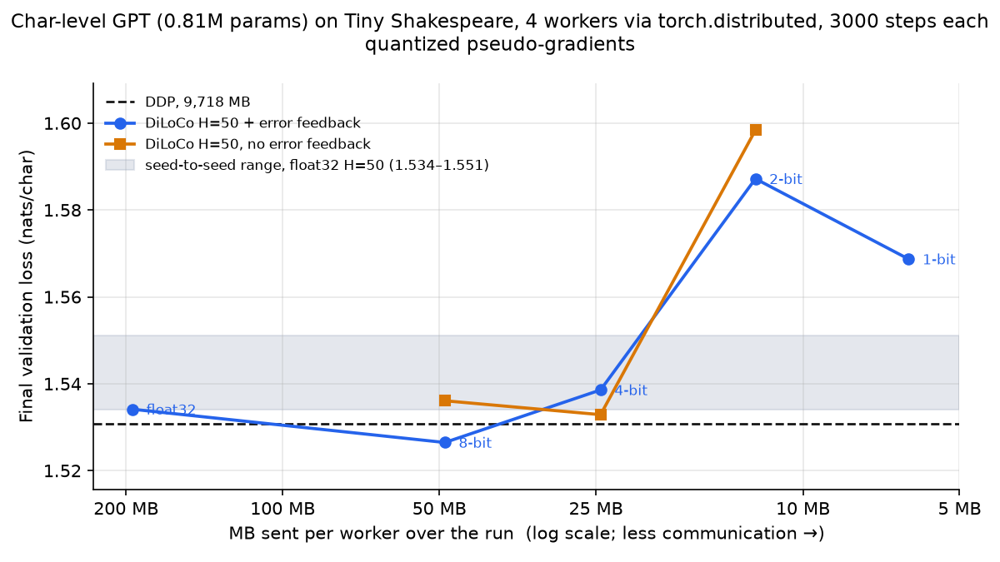
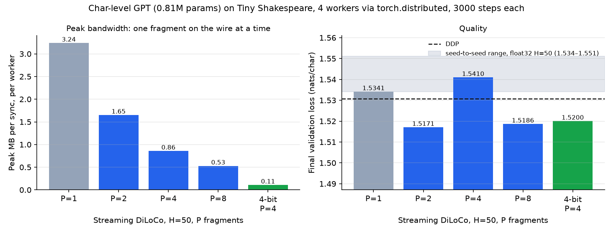

Distributed Low-Communication training from first principles: a pure-NumPy core with hand-written backprop and optimizers, research extensions with measured results, and a PyTorch library (quantized + Streaming DiLoCo) that wraps any nn.Module and runs in Docker on CPU or NVIDIA GPUs.
Data-parallel training usually all-reduces gradients after every step, which only works when every accelerator sits on the same fast interconnect. DiLoCo drops that requirement: each worker runs H local AdamW steps with no communication, then workers share one pseudo-gradient (how far their weights moved), and a Nesterov-momentum outer optimizer applies it to the global model. Communication drops by a factor of H while model quality holds up.
Δ = θ − average(θ_1, …, θ_k).m ← μ·m + Δ, then θ ← θ − η·(Δ + μ·m).Communication per round is one parameter-sized message per worker in each direction, against one per step for the synchronous baseline.
The NumPy core in model.py is built bottom-up from 30 small, tested functions. Every gradient, optimizer moment, and parameter update is written by hand.
Initialize parameters and implement the forward pass, activations, softmax, cross-entropy loss, and backprop that every worker will run locally. Softmax subtracts the row max and cross-entropy uses log-sum-exp, so logits of 1000+ don't overflow.
Build the per-worker AdamW optimizer: state init, moment updates, bias correction, the parameter step, and decoupled weight decay.
Implement the pytree-style parameter operations (clone, scale, subtract, average) that DiLoCo uses to compute pseudo-gradients and merge worker replicas. Updates are pure functions that return new dicts, so workers never alias the global model.
Partition the dataset across workers (IID and non-IID), sample per-worker batches, and run local training steps that emulate a single DiLoCo inner worker.
Implement the server-side outer optimizer: state init, momentum buffer updates, Nesterov parameter updates, and computing the outer pseudo-gradient from worker deltas.
Compose everything into a full DiLoCo communication round, the outer training loop across rounds, and a synchronous data-parallel baseline that does the same number of gradient computations, so the comparison isolates communication frequency.
Measure held-out loss, classification accuracy, and quantify DiLoCo's communication savings versus the synchronous baseline.
python scaffold.py: 4 workers, 8 rounds × 20 inner steps, a 2-layer MLP, synthetic 3-class data.
| Method | Syncs | Scalars sent | Eval loss | Eval acc |
|---|---|---|---|---|
| Synchronous data-parallel | 160 | 249,600 | 0.2695 | 88.75% |
| DiLoCo (H=20) | 8 | 12,480 | 0.2593 | 90.00% |
20× less communication, with equal or slightly better accuracy.
python experiments/sweep_h.py: compute fixed at 160 local steps per worker, only the sync interval varies, 5 seeds.

DiLoCo stays at or above the synchronous baseline (90.3%) up to 40× less communication (93.0% at H=40). It only breaks down at H=80, when workers sync just twice in the whole run.
Each question below is answered with a reproducible script in experiments/ or torch_diloco/. Re-run any of them to regenerate its chart.
Dirichlet label-skew sharding, from IID to one class per worker, measured with a total-variation skew metric.

Synchronous training barely notices label skew (81–84% everywhere), but DiLoCo's tolerance for long inner loops shrinks as skew grows: with one class per worker it falls to 73.2% at H=20 and 49% at H=80. The more heterogeneous the data, the more often workers need to sync.
k-bit quantization down to 1-bit sign × mean, top-k sparsification, per-worker error feedback, and exact byte accounting including scales and indices.

Even 1-bit pseudo-gradients match float32 accuracy (93.5% vs. 92.8%) while sending 19.3× fewer bytes, about 386× less traffic than synchronous training overall. Top-k does much worse at the same byte budget.
One worker 4× slower than the rest, on a simulated wall clock. Compared: waiting for it, deadline-based rounds with step-weighted averaging, and event-driven async DiLoCo with staleness discounting.

Plain DiLoCo leaves the fast workers idle 56% of the time. Deadline rounds recover the straggler-free upper bound (90% in 120 s). Free-running async never waits but stale pushes hurt; a 1/(1+staleness) discount recovers 87.0% → 91.2%.
torch.distributedA 0.81M-parameter character-level GPT on Tiny Shakespeare, trained by 4 real worker processes for 3,000 AdamW steps each. DDP vs. DiLoCo at the same compute.

| Run | Syncs | MB / worker | vs. DDP | Val loss |
|---|---|---|---|---|
| DDP | 3,000 | 9,718 | 1× | 1.5308 |
| DiLoCo H=25 | 120 | 389 | 25× | 1.5342 |
| DiLoCo H=50 | 60 | 194 | 50× | 1.5341 |
| DiLoCo H=100 | 30 | 97 | 100× | 1.5512 |
| DiLoCo H=250 | 12 | 39 | 250× | 1.5942 |
| DiLoCo H=500 | 6 | 19 | 500× | 1.6702 |
50× less data for a 0.2% higher validation loss, and 100× less for 1.3% higher.
Blockwise k-bit codes (one float32 scale per 1,024 values), bit-packed into uint8. Workers all_gather the packed payloads and every rank decodes and averages them in the same order, so global params stay bit-identical.

8-bit and 4-bit land inside the float32 seed range (1.534–1.551), so 4-bit DiLoCo trains this LM sending 397× less data than DDP with no measurable quality loss. At 2 bits and below the loss rises above the noise band.
Parameters are split into P fragments that sync on staggered schedules, so only one fragment is on the wire at a time. Total traffic is unchanged; the burst size shrinks.

Peak bandwidth drops roughly P× at no measured cost in quality. Combined with 4-bit, each sync is a 108 KB burst, 30× smaller than plain DiLoCo's 3.2 MB.
Two Docker containers (4 workers) train the LM over a link throttled to 100 Mbit/s with 20 ms delay by tc netem. Times are measured, not simulated.
| Run | Link | Steps | MB / worker | Wall time | Val loss |
|---|---|---|---|---|---|
| DDP | unthrottled | 300 | 971.8 | 35.0 s | 1.9788 |
| DDP | 100 Mbit/s | 300 | 971.8 | 188.0 s | 1.9788 |
| DiLoCo H=50 | 100 Mbit/s | 300 | 19.4 | 33.2 s | 2.1747 |
| DiLoCo H=50, 4-bit | 100 Mbit/s | 1,600 | 13.1 | 209.1 s | 1.6433 |
The slow link makes DDP 5.4× slower; DiLoCo on it runs as fast as DDP on an unthrottled one. In about the time DDP spends on 300 steps, 4-bit DiLoCo completes 1,600 and reaches 1.643 vs. 1.979.
The diloco package wraps any PyTorch model and any inner optimizer. Keep your training loop and add one call after each optimizer step.
pip install "git+https://github.com/soorya38/distributed-low-communication-training-of-language-models.git"from diloco import DiLoCo, init_distributed
rank, world_size, device = init_distributed() # NCCL on GPUs, gloo on CPU
torch.manual_seed(0) # same starting weights everywhere
model = MyModel().to(device)
inner_opt = torch.optim.AdamW(model.parameters(), lr=3e-4)
diloco = DiLoCo(model, inner_steps=50,
quantize_bits=4, # optional: 4-bit + error feedback
num_fragments=4) # optional: Streaming DiLoCo
for x, y in my_shard_of_the_data:
loss_fn(model(x), y).backward()
inner_opt.step()
inner_opt.zero_grad()
diloco.step() # syncs when due; no-op otherwise
with diloco.global_weights():
evaluate(model)One Dockerfile builds a CPU or NVIDIA GPU image, and docker compose up trains one model across two containers over the network. The GPU path has not yet been tested on real NVIDIA hardware.
docker build -t diloco:cpu . && docker run --rm diloco:cpu
docker compose up --build # two "machines"
NET_DELAY=20ms NET_RATE=100mbit docker compose up # emulate a slow link
docker compose -f compose.yaml -f compose.gpu.yaml up --build # NVIDIA GPUs